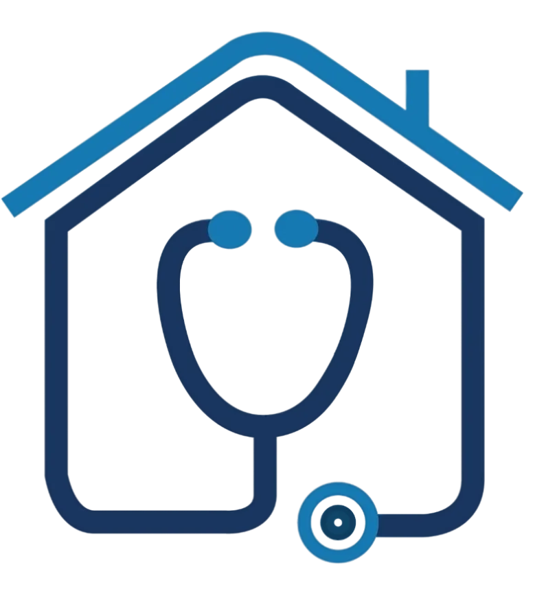
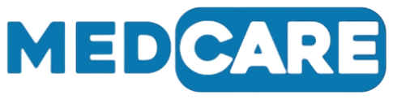

Soins médicaux à domicile · CasablancaLes contacts · Les zones · Les neuf services et leurs prix
Les preuves · Vos remarques
Le nouveau site de MedCare est prêt. Pour l'instant, il n'affiche que ce qui est sûr : le numéro de téléphone, WhatsApp, l'e-mail, les neuf services, l'ouverture 24h/24 et le devis gratuit. Nous avons retiré le reste en attendant vos réponses : nombre de patients, note, témoignages, délais d'intervention. Ce document dit ce qu'il nous faut, ce qui est obligatoire, et à quoi chaque information servira sur le site.
Sans elles, nous ne pouvons pas mettre le site en ligne.
Pour chacun : proposé aujourd'hui ou non, et dans quelles conditions.
Ceux du site sont des estimations. Corrigez-les ou barrez-les.
★ signale une information obligatoire. Tout ce qui n'a pas de ★ est facultatif, mais chaque réponse rend le site plus précis et plus convaincant. N'écrivez que ce qui est vrai aujourd'hui : nous ne publions que ce qui peut être prouvé.
Tout le site mène à deux boutons : « Appeler » et « WhatsApp ». Nous devons être sûrs du numéro qui se trouve derrière chacun.
| Information | Votre réponse | À quoi ça sert | Obligatoire | |
|---|---|---|---|---|
| 1 | Numéro d'appel principal | Sur le site : 06 26 21 65 68correctà changer | Le bouton « Appeler » de toutes les pages. | ★ |
| 2 | Numéro WhatsApp | le mêmeun autre | Le bouton « WhatsApp » et les demandes préparées par le site. | ★ |
| 3 | Qui répond la nuit et le week-end ?Une personne, une permanence, un renvoi d'appel | Le site promet une réponse 24h/24 et 7j/7. Il faut que ce soit vrai chaque nuit. | ★ | |
| 4 | Délai habituel de réponse sur WhatsApp | Pour dire au patient à quoi s'attendre. | — | |
| 5 | E-mail professionnel | Sur le site : doccaremed@gmail.com | Une adresse au nom de MedCare inspire plus confiance qu'une adresse Gmail. | — |
| 6 | Langues parlées au téléphone | françaisarabedarijaamazighanglais | Le site existe en français et en arabe. | — |
| 7 | Réseaux sociauxFacebook, Instagram, LinkedIn | Liens dans le pied de page. | — |
Le site annonce : « Casablanca et sa région aujourd'hui, d'autres villes bientôt ». Cochez ce qui est exact.
| Zone | Couverte aujourd'hui ? | Remarque (quartiers exclus, supplément de déplacement…) | Obligatoire |
|---|---|---|---|
| Casablanca (tous les quartiers) | ouinonselon le service | ★ | |
| Mohammedia | ouinonselon le service | — | |
| Bouskoura | ouinonselon le service | — | |
| Dar Bouazza | ouinonselon le service | — | |
| Nouaceur | ouinonselon le service | — | |
| Médiouna | ouinonselon le service | — | |
| Berrechid | ouinonselon le service | — | |
| Autre : ……………………………… | ouinonselon le service | — |
| Ville | Ouverture prévue (mois, année) | Services proposés au départ |
|---|---|---|
Tant qu'une ville n'a pas de date, le site ne la nomme pas. Il dit seulement « d'autres villes bientôt ».
Pour chaque service : cochez sa situation, puis corrigez les prix. La colonne « Prix sur le site » montre ce qui est affiché aujourd'hui, à titre indicatif.
Vous préférez ne pas afficher de prix ? Écrivez « sur devis » dans la dernière colonne. Le site dira alors : devis gratuit avant la visite. ★ Un service sans réponse sera retiré du site.
| Formule | Prix sur le site | Prix réel, ou « sur devis » |
|---|---|---|
| Transport sanitaire | À partir de 600 DH / trajet urbain | |
| Ambulance médicalisée | À partir de 1 500 DH / intervention | |
| Longue distance | À partir de 8 DH / km | |
| Délai habituel d'arrivée à CasablancaSeulement si vous pouvez le tenir | ||
| Remarque | ||
| Formule | Prix sur le site | Prix réel, ou « sur devis » |
|---|---|---|
| Consultation jour | À partir de 300 DH / visite | |
| Consultation nuit / férié | À partir de 500 DH / visite | |
| Suivi chronique | À partir de 250 DH / visite | |
| Délai habituel d'arrivée à CasablancaSeulement si vous pouvez le tenir | ||
| Remarque | ||
| Formule | Prix sur le site | Prix réel, ou « sur devis » |
|---|---|---|
| Soin ponctuel | À partir de 120 DH / passage | |
| Forfait journalier | À partir de 300 DH / jour | |
| Forfait hebdomadaire | À partir de 1 500 DH / semaine | |
| Délai habituel pour un rendez-vousSeulement si vous pouvez le tenir | ||
| Remarque | ||
| Formule | Prix sur le site | Prix réel, ou « sur devis » |
|---|---|---|
| Garde de jour (8h) | À partir de 250 DH / jour | |
| Garde de nuit (12h) | À partir de 350 DH / nuit | |
| Garde continue (24h) | À partir de 600 DH / jour | |
| Délai habituel pour un rendez-vousSeulement si vous pouvez le tenir | ||
| Remarque | ||
| Formule | Prix sur le site | Prix réel, ou « sur devis » |
|---|---|---|
| Consultation générale | À partir de 150 DH / consultation | |
| Consultation spécialiste | À partir de 300 DH / consultation | |
| Abonnement famille | À partir de 500 DH / mois | |
| Délai habituel pour un rendez-vousSeulement si vous pouvez le tenir | ||
| Remarque | ||
| Formule | Prix sur le site | Prix réel, ou « sur devis » |
|---|---|---|
| Déplacement préleveur | À partir de 80 DH / domicile | |
| Bilan standard | À partir de 250 DH / bilan | |
| Forfait famille | À partir de 600 DH / intervention | |
| Délai habituel pour un rendez-vousSeulement si vous pouvez le tenir | ||
| Remarque | ||
| Formule | Prix sur le site | Prix réel, ou « sur devis » |
|---|---|---|
| Transfert inter-villes | À partir de 8 DH / km | |
| Rapatriement national | Sur devis | |
| Rapatriement international | Sur devis | |
| Délai habituel pour un rendez-vousSeulement si vous pouvez le tenir | ||
| Remarque | ||
| Formule | Prix sur le site | Prix réel, ou « sur devis » |
|---|---|---|
| Poste de secours | À partir de 1 500 DH / jour | |
| Dispositif renforcé | À partir de 3 500 DH / jour | |
| Dispositif complet | Sur devis | |
| Délai habituel pour un rendez-vousSeulement si vous pouvez le tenir | ||
| Remarque | ||
| Formule | Prix sur le site | Prix réel, ou « sur devis » |
|---|---|---|
| Visite à domicile | À partir de 200 DH / visite | |
| Forfait mensuel | À partir de 2 000 DH / mois | |
| Télésurveillance | À partir de 350 DH / mois | |
| Délai habituel pour un rendez-vousSeulement si vous pouvez le tenir | ||
| Remarque | ||
L'ancien site affichait des chiffres et des avis que personne ne pouvait vérifier. Ces éléments peuvent les remplacer, du plus utile au moins utile.
| Ce que vous préparez | Pourquoi | |
|---|---|---|
| La fiche Google de MedCareLe lien, ou votre accord pour la créer | Aucune fiche MedCare n'apparaît aujourd'hui dans Google. C'est là que les familles cherchent un numéro et lisent les avis. | |
| Trois à six témoignages de patientsAvec leur accord écrit, prénom et quartier | Les témoignages de l'ancien site étaient inventés. Ils ont été retirés. | |
| Des photos réellesAmbulances, équipe en tenue, matériel, locaux | Les images actuelles sont des illustrations. Une photo de votre ambulance vaut plus que toutes. | |
| Les qualifications des soignantsDiplômes, inscriptions à l'Ordre : copies ou numéros | Le site écrit « soignants diplômés ». Il faut pouvoir le montrer si on vous le demande. | |
| Les assurances et mutuelles acceptéesCNSS, CNOPS, assurances privées, ou aucune | Les familles posent la question avant de réserver. | |
| Les moyens de paiementEspèces, carte, virement | Évite une mauvaise surprise au moment de payer. | |
| Des chiffres que vous pouvez prouverPatients suivis par an, nombre de soignants, nombre d'ambulances | N'indiquez que des chiffres exacts, même s'ils sont modestes. | |
| Vos partenairesCliniques, laboratoires, avec leur accord | Pour les prélèvements et les transferts, le patient veut savoir où vont ses analyses. |
Le site reçoit des messages qui parlent de santé. Ces pages n'existent pas encore.
| Ce que vous préparez | Pourquoi | |
|---|---|---|
| Le nom du directeur de la publication | Page des mentions légales. | |
| Le nom de domaine et son propriétaireExemple : medcare.ma | Le domaine doit appartenir à MedCare, pas à un prestataire. | |
| La déclaration à la CNDPNuméro, si elle existe déjà (loi 09-08) | À vérifier avec votre conseil juridique avant la mise en ligne. | |
| Votre politique de confidentialitéOu votre accord pour qu'on la rédige avec vous | Dit au patient ce que deviennent ses messages. |
La bulle de discussion en bas de l'écran répond aux questions sur les services. Elle ne peut ni envoyer une ambulance ni enregistrer un rendez-vous.
| On le garde ? | Oui, avec une clé au nom de MedCare (service Groq)Non, on le retire : le téléphone et WhatsApp suffisent |
Vous avez vu le nouveau site. Dites-nous ce que vous en pensez, même en deux mots.
| Information | Votre réponse |
|---|---|
| Votre avis d'ensemble | Il me convientQuelques retouchesÀ revoir |
| Ce qui vous plaît | |
| Ce qu'il faut changerTextes, couleurs, photos, ordre des rubriques | |
| Ce qui manque | |
| Autres remarques |
Le minimum pour mettre en ligne. Les numéros confirmés, la personne qui répond la nuit, les zones couvertes, et pour chaque service : proposé ou non, avec un prix validé ou « sur devis ».
S'il faut choisir par quoi commencer. La fiche Google, puis quelques photos de votre équipe et de vos ambulances.